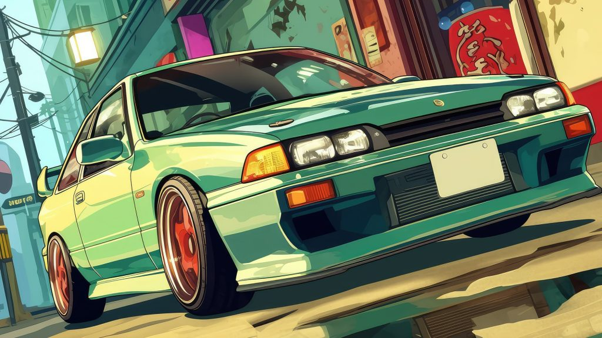
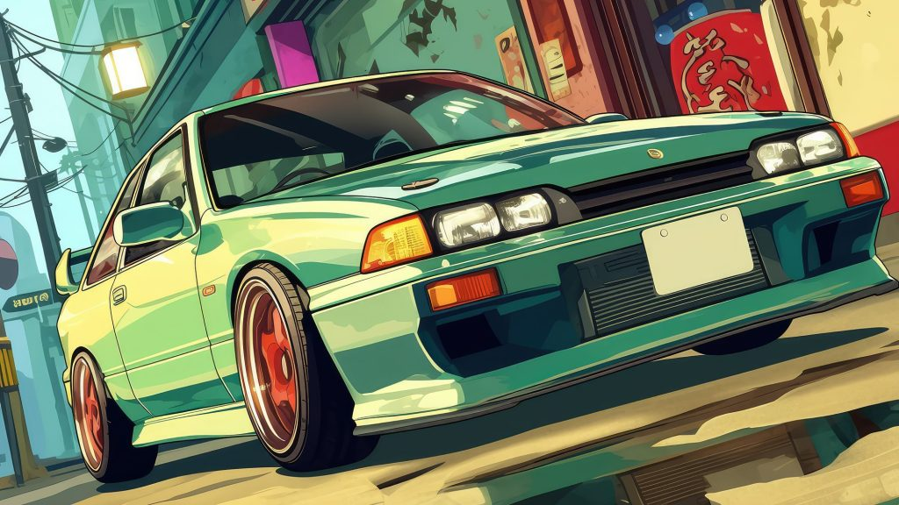
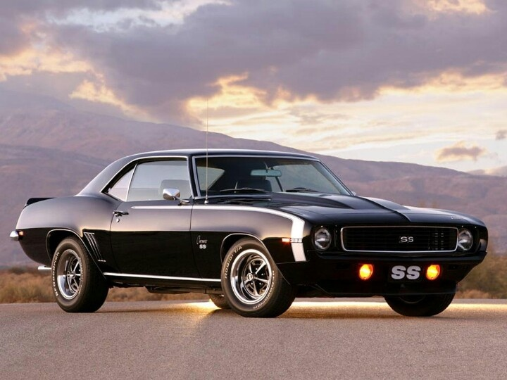
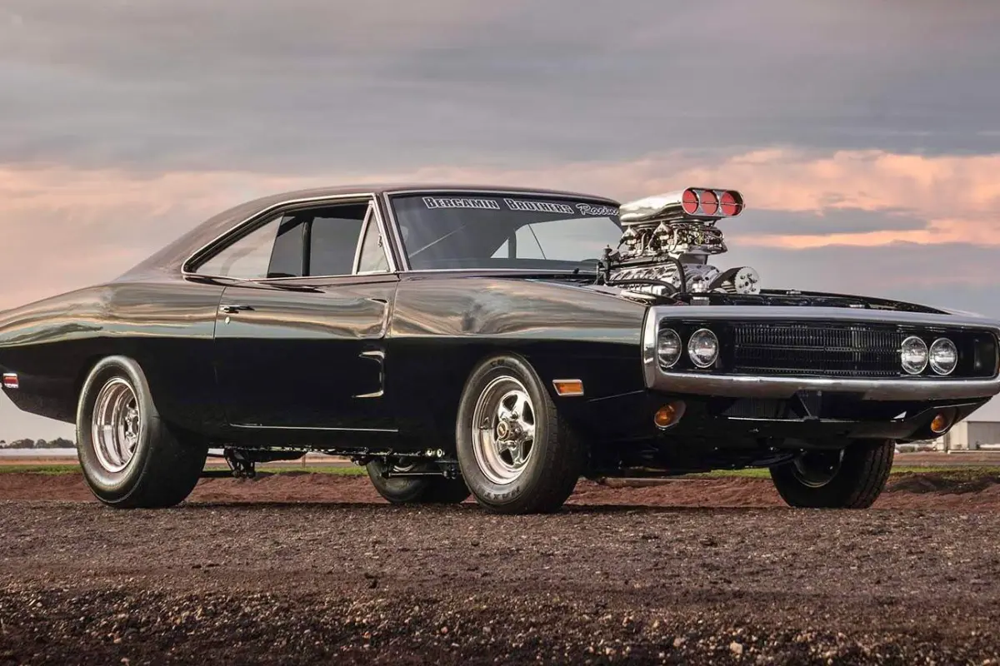

Ford Mustang 1969
El Ford Mustang de 1969, para mí representa el arte del automotriz ya que aparte de ser un clásico, su motor V8 390, transmisión estándar de 4 velocidades con tracción trasera, con sus dos versiones de competicion, los cuales era el Boss 302 y el Boss 429, el Boss 302 se destaco en el Trans-Am y el Boss 429 se destaco en las carreras de Nascar

Top mis 5 Coches Favoritos
En esta parte pondre mis 5 coches que para mi son los mas bonitos y los que me gustaria llegar a tener, alomejor no los 5, pero minimo uno de los cinco si quiero llegar a tener.
- Chevrolet Camaro SS 
- Nissan Skyline R34
- Porsche 911 Turbo
- Dodge Challenger 1970 
- Motor V-8 de 4 cuerpos
- Cilindrada: 351 pulgadas cubicas
- Diametro y carrera: 4.00 x 3.50 pulgadas
- Relacion de compresion: 10.7:1
- Potencia: 290 a 4800 RPM
- Tanques: Hidraulicos
- Distribucion de arbol de Levas: Admisión: 256°, Escape: 270°, Superposición: 33°, Alzada: (Admisión) 0.418″ (Escape) 0.448″.
- Carburador: Ford Autolite de 4 cuerpos, modelo C9ZF-9510C (transmisión manual), C9ZF-9510D (transmisión automática).
- Camaro SS
- variante de alto rendimiento del famoso "pony car" estadounidense, equipada tradicionalmente con motores V8 de gran cilindrada (actualmente 6.2L) y una estética deportiva distintiva.
- Nissan Skyline R-34
- icónico automóvil deportivo japonés, producido entre 1999 y 2002, reconocido por su alto rendimiento y tecnología, especialmente en su versión GT-R.
- Porsche 911
- icónico automóvil deportivo de lujo, producido por el fabricante alemán Porsche AG desde 1964. Se caracteriza por su diseño atemporal tipo coupé fastback, configuración de motor trasero bóxer de seis cilindros y plazas 2+2, manteniendo su esencia original a lo largo de más de seis décadas de evolución.


Historia del Ford Mustang 1969
En 1969 existían 11 versiones diferentes, entre otros el Boss 302 de 290 CV, el Boss 429 de 375 CV, el Grande y el Mach I. Debido a las presiones gubernamentales por la crisis del petróleo, éste sería el único modelo que sobrevivirá hasta 1973 y a partir de 1974 apareció la segunda generación, basada en la plataforma 'Arizona' que utilizaba el Ford Pinto. Era un modelo más pequeño (48,2 cm menos de longitud) y ligero (222,2 kg menos de peso). El V8 desapareció del catálogo aunque un año más tarde volvería a escena, aunque, eso sí, con 'sólo' 130 CV. También estaban disponibles los propulsores de 4 y 6 cilindros, pero también de menor potencia. Para suplir esta carencia, la firma del óvalo azul introdujo interiores de mayor calidad.